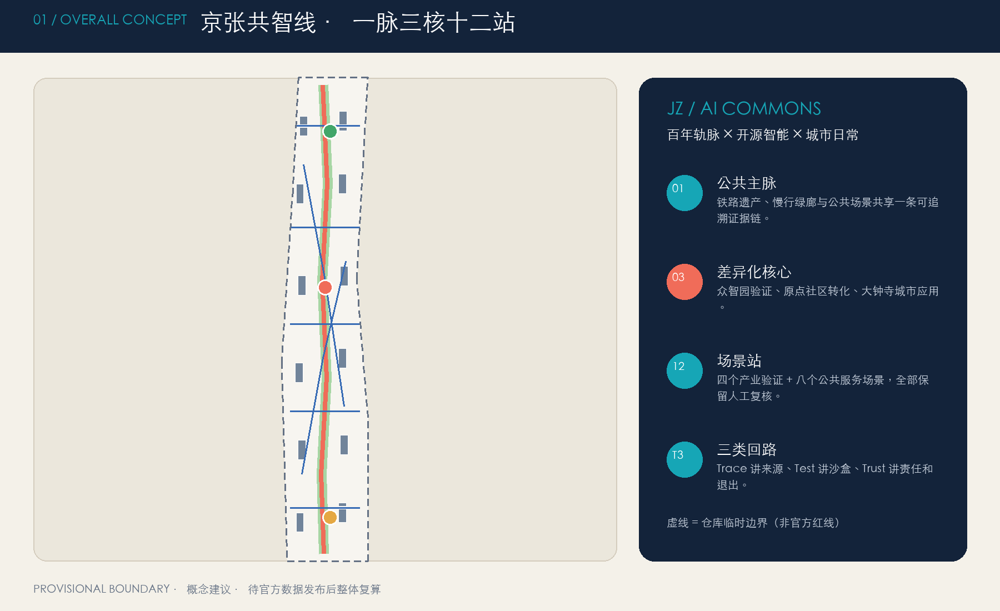
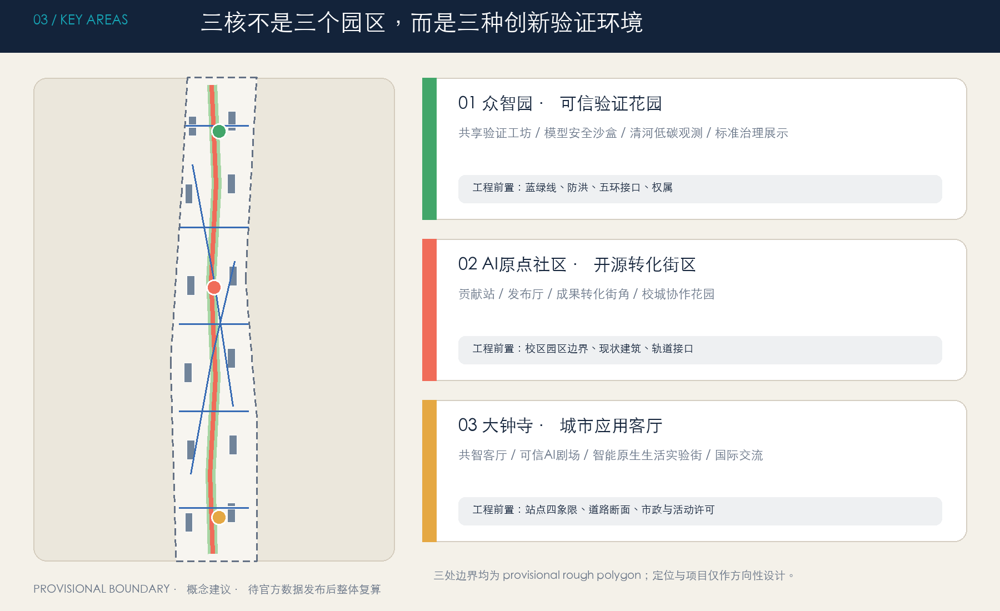

Spatial structure

The full English narrative is available in report/proposal.en.html. The Chinese display page remains available at visual/index.html.
Key areas and evidence chain

The three prototypes share a spatial–scenario–responsibility checklist. Each must show an entrance, walking interface, section, scenario placement, constraints, and operating responsibility before professional deepening.
Review package
Trace records source and version. Test uses a bounded sandbox. Trust names the human reviewer, appeal route, pause signal, and recovery responsibility.
Scenario operating cards
Industrial validation
TV-01 model security red-team; TV-02 robot yielding; TV-03 edge-compute energy; TV-04 urban-agent replay. Each has a named lead, review evidence, stop rule, and fallback service.
Public services
SC-05 to SC-12 cover open-source release, mobility, health navigation, transfer support, low-carbon observation, everyday services, cultural guidance, and an AI route.
Data lifecycle
Clear raw data after a test or service closes. Retain only authorized aggregates or audit records. Numerical KPI/SLA thresholds are set by the authorized operator and professional reviewers.
RACI and public component library
A · Public accountability
Accountable for opening, pause, recovery and appeals.
R · Station steward
Runs entry, staffing, fallback service and incident logging.
C · Review network
Professional, accessibility, community and data/IP reviewers.
TR-01 / TE-01
Source/version plaque and test-boundary plaque.
TU-01 / PA-01
Human-owner/appeal plaque and paper/human service desk.
AC-01 / LG-01
Continuous-access component and low-carbon maintenance plaque.
Accessibility QA
No color-only meaning; clear bilingual and generated-content labels; adequate contrast; continuous rest and accessible alternatives; keyboard order, focus state, text alternatives, and no-script readable content.
The minimum walk-through includes an older person, a person with limited mobility, and an operator.
Evidence and operation
Six gates
Issue → Branch → Sandbox → Human Review → Small Public → Changelog.
Four seasons
Open-source problem season → safety validation season → global commons week → evidence review season.
Human fallback
Any on-site responsible person may pause. Paper or human service remains available during a pause, outage, or non-AI use.
See the English proposal report for sources, metrics, assumptions, and the complete scenario cards.